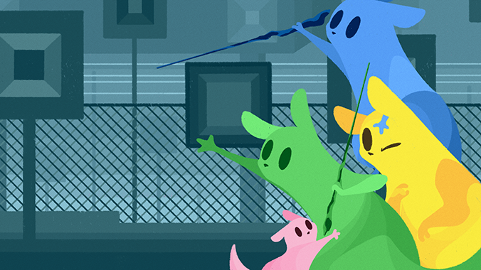

Jollyho Co-op, neboli "Jolly Co-op" je mód, který přidává funkci hraní s přáteli na jednom počítaći či konzoly.
Co-op je pouze lokální a je potřeba sdílení obrazu pro hraní na více přístrojích.
Pokud chcete chcete hrát online, tak použijte
Rain Meadow.
(Staženo s hrou)